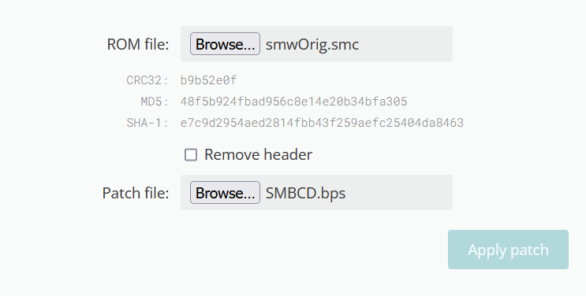

![[Back]](graphics/banners/back.png)
Things to Note
This guide covers both how to install SMW rom hacks, and how to use MSU-1. Though the guide mentions SMBCD, the instructions could apply to most other Super NES rom hacks.
MSU-1 is the main way that SMBCD delivers its rich CD quality audio among other features that a real Super NES would struggle with, and as such MSU-1 is required for SMBCD to start. If you're missing MSU-1 or haven't installed it correctly, SMBCD will not start. If you have followed the guide and installed all the required MSU-1 files but SMBCD still will not start, check if your emulator supports MSU-1 or join the FamicomCD Discord for support.
Important: You need your own USA Super Mario World SMC/SFC to patch SMBCD's BPS file. We recommend that you dump your own official SMW Super NES cartridge. We will not instruct you on how or where to get the game files if you don't want to or can't dump your own cartridge.
Setting up SMBCD and MSU-1
(The first few steps are for general SMW Hack setup. If you already know how to set up SMW hacks, skip to step 5).
Step 1: First of all, download a version of SMBCD from the Version Downloads page. It will download as a zip file.
Step 2: Open the zip to reveal its contents. If you don't have a zip archive opener, we recommend using 7-Zip.
Step 3: When opening the zip archive to a SMBCD build, you will see the SMBCD BPS patch file, an MSU file, and PCM files. You only have to worry about the BPS for now. This is where your USA SMW SMC/SFC comes into play.
![[bpsimage]](graphics/MSU1Setup/bps.png)
Step 4: Patch the SMBCD BPS to the USA SMW SMC/SFC using Floating IPS or Marc Robledo's Onliner Patcher.
Floating IPS Method
![[flipsimage]](graphics/MSU1Setup/flips.png)
Marc's Online Patcher Method

Step 5: Once you have your SMBCD SMC file, test if it works. If the MSU-1 required screen appears, you've done patched it correctly, but you're not done yet. You'll need the MSU-1 files to complete the installation.
![[testingimage]](graphics/MSU1Setup/testing.png)
Step 6: Remember the MSU file and PCM files from before? You need these files to be in the same directory and the same name* as your SMBCD SMC file. For organization, it's recommended that you store all of SMBCD's file in their own folder.
*PCM files only half follow this rule as they need their track number to come after the name. This is indicated by the hyphen and the number.
![[samefolderimage]](graphics/MSU1Setup/samefolder.png)
Step 7: Once all of the files are in place, SMBCD should start as normal. If you are still getting the MSU-1 is missing error, please make sure your emulator is supported under the SMBCD Emulator Support Sheet or join the FamicomCD Discord for support.